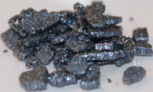
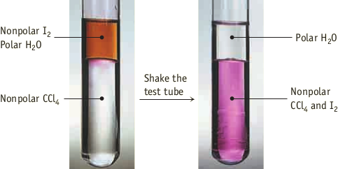

Iodio
Lo iodio è un solido nero con lucentezza metalica che sublima facilmente senza fondere a pressione atmosfetica dando vapori violetti (il nome iodio deriva dal greco ἰώδης, violetto). Lo iodio è composto da molecole I2 tenute assieme dalle forze di dispersione di London. Vinte queste forze si ha la sublimazione a gas dello iodio solido.
Le soluzioni di iodio in solventi organici hanno colore diverso a secondo della natura del solvente, probabilmente a seguito a formazione di complessi dello iodio con il solvente. In solventi non basici lo iodio presenta lo stesso colore che possiede in fase vapore, perché le interazioni tra le molecole I2 e quelle di solvente sono deboli. In solventi più basici, come per esempio gli alcoli, la colorazione varia da arancio fino al bruno.
Si considerino le soluzioni di I2 in acqua e in tetracloruro di carbonio (CCl4). Lo iodio può interagire con l'acqua, una molecola polare tramite interazioni dipolo/dipolo indotto. Allo stesso modo l'acqua interagisce con CCl4.
CCl4 molecola tetraedrica, è apolare, di conseguenza può interagire con lo iodio solo tramite forze di dispersione di london. L'immagine successiva mostra cosa avviene quando si agita una fiala contenente i tre liquidi.
Lo iodio si discioglie scarsamente in acqua dando una soluzione marrone. Quando questa soluzione è aggiunta nella fiala contenente CCl4, le due fasi liquide non si miscelano. (L'acqua polare non si dissolve nel CCl4 apolare. (si noti come la fase costituita CCl4 più densa d = 1.58 g/mL sia al di sotto di quella acquosa). Agitando la fiala, I2 viene estratto nella fase polare di CCl4, si nota infatti la scomparsa del colore marrone nell'acqua e la comparsa di quella viola in CCl4.
Un altro esempio è dato dallo iodio che si scioglie in etanolo